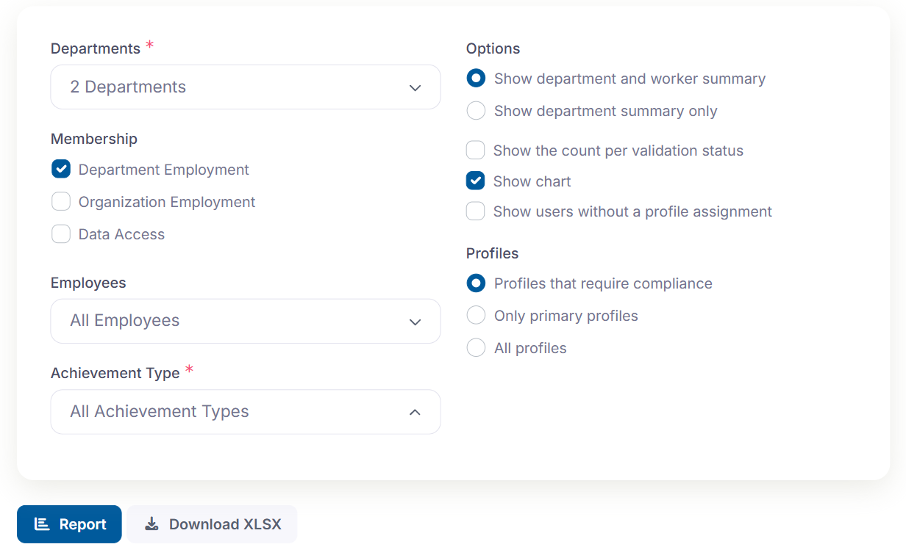
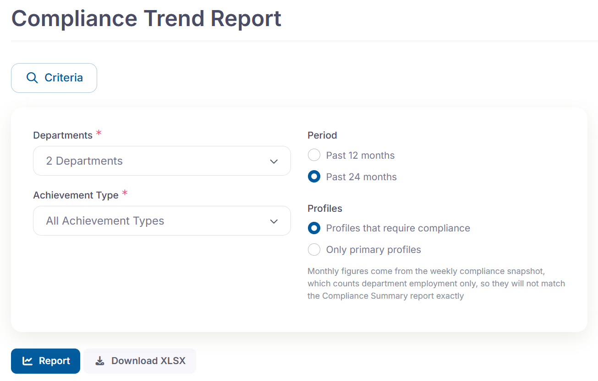
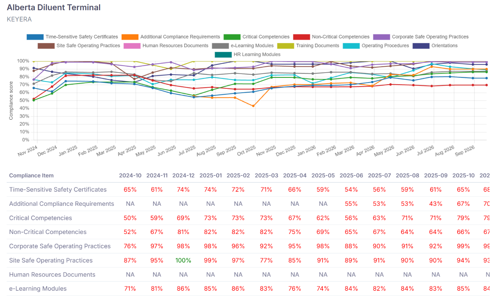
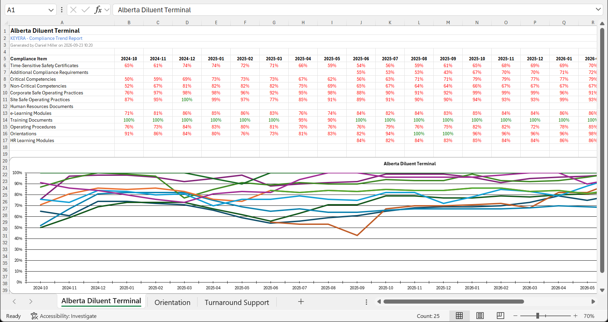

Release 26.5 · October 8
Compliance reporting in CMDS
The compliance summary now shows live data, and a new report shows the trend over time
CMDS End Users Meeting · Sep 24, 2026
Motivation
The compliance summary report is now up-to-the-minute
A popular request
Many administrators asked for live compliance results. On a typical day, CMDS records more than 1000 competency status changes and more than 600 achievement changes. Waiting until the next day to see that is not ideal.
Today
A nightly snapshot
The report reads a snapshot taken overnight. Depending on the time of day you run the report, the results are up to a day old.
In the next version (October 8)
Calculated live
The report is calculated from current data whenever you run the report. A competency status change made a minute ago is already in the numbers.
Result: the compliance score you see is the compliance score right now.
Compliance Summary
The same report, live and faster
1 Simpler criteria: no report type, no dates, no refresh banner

Orientation department
Before
11 to 16 seconds per run
After
Under 2 seconds, on live data
Same criteria
Departments, membership, achievement types and profiles work as before
Counts that match
The number on each department is now the number of people in the report
Current compliance only
The two history options move to the new Compliance Trend report
New report
Compliance Trend shows each department month by month
1 Pick departments and a period

2 One chart and one score table per department

Up to 20 departments
The same limit as the Compliance Summary
12 or 24 months
One point per month, ending with the current month
Clear when empty
A department with no requirements says so instead of drawing a flat line
In the Reports list
Right below the Compliance Summary
Sharing the trend
Download it as a workbook or a PDF
1 The XLSX has one worksheet per department, with its chart

Two formats
Download XLSX
From the criteria or the report, for your own analysis
Download PDF
Landscape pages with the charts as you see them, ready to send
Good to know
How the two reports differ
1
Live versus monthly
The summary is calculated live. The trend reads a snapshot taken each week, keeping the last one in each month.
2
Close, not identical
The snapshot counts department employment only, and primary or compliance profiles, so the latest month won't match the summary exactly.
3
Your departments only
Both reports list only the departments your account can access, exactly as the summary does today.
History is kept for 24 months
After October 8, CMDS keeps one department compliance snapshot per month for the past 24 months. Older snapshots are removed. If you need figures from before November 2024, export them before the release.
Over to you
Questions and feedback
If time permits we can run both reports in the test environment
If time permits
A two-minute walkthrough
1
Compliance Summary
Reports list, pick one large department, run the report, and point out the count beside the department
2
Compliance Trend
Same departments, past 24 months, run the report, and hover a point on the chart
3
Downloads
Download XLSX and open a department's worksheet, then Download PDF